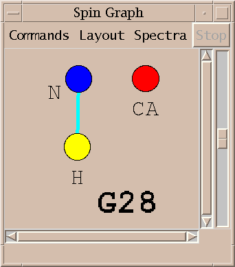
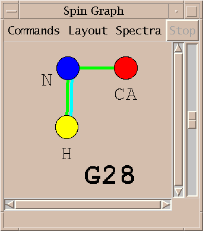
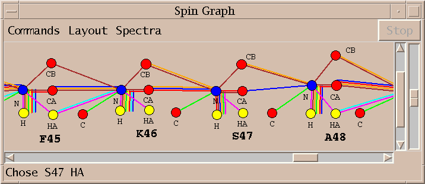

Below I describe how Sparky can be used with AutoAssign to assign the backbone of a small protein, BPTI. This was presented as a poster at the "Computational Aspects of Biomolecular NMR" conference in Pisa in June 1999. Details of how to obtain AutoAssign and use it with Sparky appear in the Extensions section of the Sparky manual.
Software to automate resonance assignment of proteins has not been widely adopted. Such programs can significantly reduce the time required for assignment, a tedious and time consuming step in NMR studies of protein structure and dynamics. A difficult aspect of automated methods is assimilating the results. It is necessary to check the assignment for errors and omissions. A second impediment is that current programs deduce assignments from lists of peak positions. They have difficulty achieving results as complete as hand assignment because they do not have direct access to the spectra. To address these limitations I have united a graphical manual assignment program, Sparky, and an automated protein backbone assignment code called AutoAssign. The key new feature of this system is a diagram called a spin graph. A spin graph represents atoms as dots and assigned peaks as lines connecting the dots. It provides an intuitive and detailed display of generated assignments. The tight integration of Sparky and AutoAssign allows a cycle of revising peak lists and computing assignments to be done in tens of seconds. The spectroscopist adds and deletes peaks based on flaws in the previously computed assignments and direct examination of contoured spectra. Tests of the Sparky / AutoAssign software on 58 residue Basic Pancreatic Trypsin Inhibitor (BPTI) protein suggest that this combination of tools may offer substantial time savings for protein backbone assignment. This approach is expected to result in assignments that are as complete as those obtained with traditional methods. Application to more realisitic protein systems is necessary to better assess the usefulness of this software.
The following is a walk through of the backbone assignment process for the 58 residue protein BPTI using the Sparky and AutoAssign programs.
I start with 8 processed spectra, a 2D N15 HSQC, and 7 triple resonance spectra: HNCO, HNCA, CA(CO)NH, HNCACB, CBCA(CO)NH, HNHA, HA(CO)NH. This is the preferred set of spectra for running AutoAssign. It is possible to work with fewer spectra, omitting the HNCO and the two HA spectra. The spectra can be processed with Bruker software, Varian's VNMR, NMRPipe from the NIH, or Felix.
The first step is to align the spectra. This is done by shifting the spectrum ppm scales so that corresponding peaks in the spectra are aligned. This is necessary when the referencing information used in processing the spectra is not consistent. You use the Sparky spectrum tool (accerlator st) to enter shifts for individual spectrum axes. I do this by first shifting the H and N axes of the triple resonance spectra so that their peak line up with the HSQC peaks. Then I shift the CA axes so that peaks in CA strips line up. Then I adjust the HA axes. To determine the numerical shifts in ppm I find corresponding strong peaks in two spectra, pick them, and take the difference of their chemical shift positions as shown in peak lists (accerator lt). For aligning the H and N axes of the triple resonance spectra with the HSQC it is helpful to project the 3D spectra onto the HN plane. You can create a 2D projected spectrum with the ucsfdata program using a command like:
% ucsfdata -s1 256 -r -o hnca2hn.ucsf hnca.ucsf
This command projects the along the CA axis of the HNCA spectrum, in this case it is axis w1 having 256 data points. Executing ucsfdata without any arguments will give a summary of the options. The alignment of the ppm axes described above does not establish absolute ppm scales. You need a reference peak of known chemical shift to do this. It is desirable to establish absolute referencing because AutoAssign and some Sparky tools use chemical shift statistics to help guess assignments.

Above is shown the N15 HSQC spectrum. I interactively adjust contour levels and pick peaks above a specified threshold and minimum linewidths. For the triple resonance spectra I pick peaks that are sufficiently close in the amide H and N dimensions to picked HSQC peaks. This is done with the restricted peak picking extension (accerator kr). Limitting the picked region of the 3D spectra allows me to use lower thresholds while keeping the number of noise and artifact peaks small. This process produces a total of about 750 peaks in 30 minutes. Most of the time is spent adjusting thresholds and repicking to obtain approximately the expected number of peaks.

Next I run AutoAssign to generate backbone assignments. AutoAssign was created by Gaetano Montelione's group at Rutgers and is described in a paper "Automated Analysis of Protein NMR Assignments Using Methods from Artificial Intelligence", J. Mol. Biol. (1997) 269, 592-610. It has a user interface which displays text lists of assignment information and scatter plots. I don't make use of this interface. Instead, I treat the program as a black box invoked by the dialog shown above. The picked peaks and a set of chemical shift tolerances are the only inputs. The program runs for about 5 seconds and generates backbone resonance assignments. Peak assignments are automatically inferred from the resonance assignments and displayed.
Peak assignments are displayed as a spin graph. This is the novel element of the software I am describing and much of what follows will describe how it is used to arrive at a final set of resonances assignments.
A spin graph shows atoms as dots connected by lines which represent assigned peaks. The above picture shows the amide H, N and CA atoms of glycine residue 28 of BPTI. The line connecting the amide proton and nitrogen represents an assigned HSQC peak.

An assigned peak in a 3D spectra is shown as two lines. The example above shows an HNCA peak connecting the amide proton and nitrogen to the alpha carbon.

The color of the line indicates which spectrum the assigned peak comes from.
Peaks from multiple spectra can be shown in the same diagram.
|
|
|
The above spin graph shows the BPTI assignments generated by running AutoAssign. The 58 residues of BPTI are layed out in a single row and you can scroll from one end to the other. Only the assignable backbone atoms are shown. The 8 different line colors indicate peak assignments from the 8 spectra.

No assignments are made for some residues. Sometimes this is because a small stretch of residues is bounded by prolines. In other cases the peaks needed for assignment are below the spectrum noise level. About 75% of the backbone resonances are assigned without any modifications to the automatically picked peak lists. A few residues are given incorrect assignments. About half the unassigned resonances cannot be assigned using the available spectra.
The spin graph above shows that no assignments were made for proline 13 and the assignments for cysteine 14 and lysine 15 are incomplete. I investigate this problem by starting with the lysine 15 alpha and beta carbon resonances and directly examining the spectra to verify the lysine 15 assignments.

I first display the peaks connecting the solidly assigned A16 residue to the CA and CB of K15. The first 3 strips show the CBCACONH, HNCACB and HNCA spectra for alanine 16. Next I selected the CA peak shown with the square box around it in the first strip, and request all HNCACB strips with a peak having matching carbon shift. The seven rightmost strips are displayed. The strip with amide H shift 8.001 and N shift 115.5 has a peak matching the CB peak of alanine 16 but it has not been picked.

I pick the unmarked peak identified with the strip plots above and rerun AutoAssign. The new assignments are displayed in about 15 seconds. The one additional peak allows AutoAssign to correctly assign residues P13 through K15.
Three additional locations along the BPTI backbone require direct inspection of the spectra similar to what was illustrated above to improve peak lists. After fixing those problems a few gaps remain in the assignments.

The spin graph above shows a gap between residues K46 and S47.

I click on the spin graph S47 H atom and the above list of plausible assignments is displayed. Three groups of assignments are shown. The top line of each group lists a proposed resononance assignment and the subsequent lines show peak assignments consistent with the resonance assignment. The groups are ordered by the number of supporting peak assignments.
I select the top line of the proposed assignments in the above list and press Assign. I similarly assign S47 HA and K46 C getting the assignments shown in the spin graph above. Why didn't AutoAssign make these assignments? I don't know. The algorithm is sufficiently complex that it is difficult to explain all of its behavior. It is important that the program can be treated as a black box and tools are available to complete assignments by hand.
Combining graphical tools supporting traditional assignment methods that make direct use of spectra with automated assignment software lets the NMR spectroscopist focus on difficult to assign residues. Spin graph display of automatic assignment results is an effective means of locating the difficult to assign residues. The Sparky / AutoAssign combination will need to be tested on more realistic data sets to assess the time savings resulting from this approach. I would like to provide Sparky interfaces to other automatic assignment programs for both protein backbone and side chain assignments.
Sparky is distributed for Windows, Linux, SGI, Sun, and DEC platforms:
http://www.cgl.ucsf.edu/home/sparky
AutoAssign is distributed for SGI and Linux:
http://www-nmr.cabm.rutgers.edu/software
Computer Graphics Laboratory, UC San Francisco Tom Goddard (that's me) - Sparky development Tom Ferrin - director of lab Magnetic Resonance Laboratory, UC San Francisco Members of Tom James' NMR group guide Sparky development Protein NMR Spectroscopy Lab, Rutgers University Ying Xiong - processing BPTI spectra Hunter Moseley - AutoAssign development Gaetano Montelione - director of lab